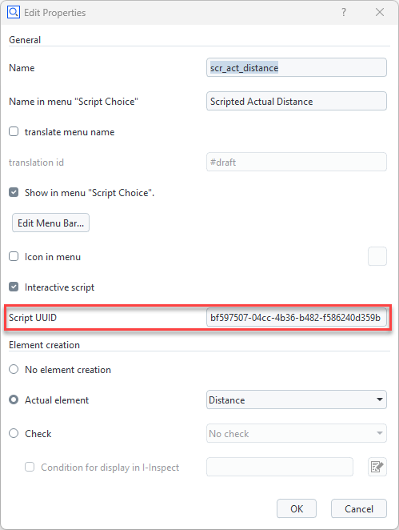

Creating and modifying scripted elements from scripts
Non-interactive creation
You use the command gom.script.sys.create_element_by_script() to create a scripted element from a script without opening its dialog. This example uses the scripted element scripted_actual_distance from the Python API Examples App:
create_distance.py
import gom
# Create scripted distance using ex01_distance.py
element = gom.script.sys.create_element_by_script (
check_type = 'none',
element_type = 'distance',
name = 'Distance 1',
parameters = {
'p1_x': 10.0, 'p1_y': 2.0, 'p1_z': 3.0,
'p2_x': -1.0, 'p2_y': -2.0, 'p2_z': -3.0
},
script_uuid = '06a112da-b742-48f0-80b3-3c3893f4cc8a'
)
You get the script_uuid from the scripted element’s script properties:

This functionality is also used in the Python API Examples App’s script tests.
Non-interactive modification
You modify an element interactively using RMB ► Edit Creation Parameters in the Explorer. You achieve the same from a script with the command gom.script.sys.edit_creation_parameters(). To disable invocation of the dialog, the parameter nodialog has been added:
modify_distance.py
import gom
# Modify scripted element created with ex01_distance.py
gom.script.sys.edit_creation_parameters (
element = gom.app.project.actual_elements['Distance 1'],
parameters = {
'p1_x': -10.0, 'p1_y': 2.0, 'p1_z': 3.0,
'p2_x': -1.0, 'p2_y': -2.0, 'p2_z': -3.0,
'nodialog': True},
)
Scripted element Python source code
def dialog(context, params):
if 'nodialog' in params and params['nodialog'] == True:
params['nodialog'] = False
return params
# ...